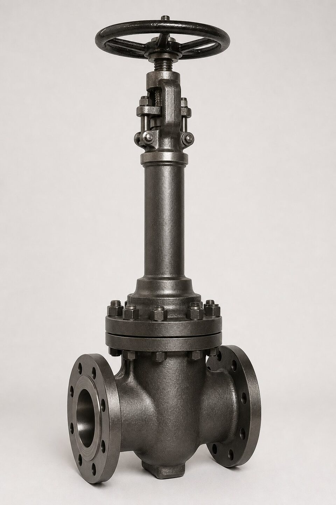

دمای بالا چه چالشی ایجاد میکند؟
دمای بالا همزمان چند مکانیزم تخریب را فعال میکند: استحکام متریال کاهش مییابد و خزش شروع میشود؛ پکینگهای معمولی تخریب شده و نشتی ساقه ایجاد میکنند؛ انبساط حرارتی قطعات میتواند آببندی نشیمنگاه را مختل کند؛ و کلاس فشاری اسمی شیر دیگر معتبر نیست. به همین دلیل، شیری که در دمای محیط برای یک سرویس کاملاً مناسب است، ممکن است در همان فشار اما در دمای بالا کاملاً نامناسب باشد. انتخاب شیر دمای بالا یک تصمیم چندمتغیره است، نه فقط انتخاب متریال.

کلاس فشاری در دمای بالا
مهمترین نکتهای که اغلب نادیده گرفته میشود این است: کلاس فشاری یک عدد ثابت نیست. جداول دما-فشار مرجع طراحی شیرآلات، حداکثر فشار مجاز هر کلاس را در هر دما مشخص میکنند و با افزایش دما، فشار مجاز کاهش مییابد. بنابراین اگر خطی در دمای محیط با کلاس مشخصی طراحی شده، ممکن است همان خط در دمای کاری بالا به کلاس بالاتری نیاز داشته باشد. این بررسی باید در مرحله طراحی انجام شود؛ چون ارتقای کلاس پس از خرید، یعنی خرید مجدد.
متریال بدنه و تریم
- فولادهای کربنی: تا محدوده دمایی مشخص؛ فراتر از آن خزش مسئلهساز میشود.
- فولادهای کمآلیاژ کروم-مولیبدن: انتخاب رایج خطوط بخار و سرویسهای داغ.
- استیلهای آستنیتی: برای دماهای بالاتر و سرویسهای خورنده.
- آلیاژهای نیکلدار: برای دماهای بسیار بالا و شرایط خاص.
- تریم سختکاریشده: برای حفظ آببندی در سیکلهای حرارتی.
پکینگ و بونت
پکینگ ساقه ضعیفترین حلقه در دمای بالا است. پکینگهای پلیمری رایج در دماهای بالا تجزیه شده و نشتی ایجاد میکنند؛ جایگزین استاندارد، پکینگهای گرافیتی انعطافپذیر است که پایداری دمایی بالایی دارند. برای محافظت بیشتر، بونت طویل استفاده میشود تا پکینگ از بدنه داغ فاصله بگیرد. در شیرهای با سیکل حرارتی مکرر، طراحی گلند و امکان آچارکشی پکینگ نیز اهمیت دارد؛ چون گرافیت در سیکلهای متعدد کمی نشست میکند و باید قابل جبران باشد.
سیکلهای حرارتی و انبساط
در خطوطی که بارها گرم و سرد میشوند، انبساط و انقباض میتواند به بدنه شیر بار وارد کند و آببندی را به مرور تخریب نماید. ساپورتگذاری صحیح خط، استفاده از اکسپنشنلوپ در نقاط لازم و انتخاب شیری با تلرانس مناسب انبساط، از جمله تمهیداتی است که در طراحی باید دیده شود. در سرویس بخار، گرمکردن تدریجی خط پیش از بهرهبرداری کامل، تنش اولیه را کاهش میدهد و عمر شیر و اتصالات را افزایش میدهد.
نکات استعلام و خرید
در استعلام شیر دمای بالا، دمای طراحی واقعی، فشار کاری در آن دما و مدت ماند در دمای اوج باید ذکر شود؛ نه فقط شرایط نامی. متریال بدنه و تریم را بر اساس دمای طراحی بخواهید و در صورت نیاز، تاییدیه سازنده برای محدوده دمایی را در مدارک بگنجانید. همچنین پکینگ گرافیتی و بونت متناسب را صریح ذکر کنید تا از پیشنهاد شیر با پکینگ استاندارد جلوگیری شود. مقایسه پیشنهادها فقط بر اساس کلاس اسمی، در سرویس دمای بالا گمراهکننده است.
جمعبندی
انتخاب شیر دمای بالا یعنی بازنگری همزمان کلاس فشاری، متریال، پکینگ و طراحی بونت. با ذکر شرایط واقعی دما و فشار در استعلام و درخواست مدارک متناسب، میتوان از خرید شیری که در سرویس داغ به سرعت ناکام میشود جلوگیری کرد و عمر خط را تضمین نمود.
سوالات رایج
چرا کلاس فشاری با دما تغییر میکند؟
استحکام متریال در دمای بالا کاهش مییابد؛ به همین دلیل جداول دما-فشار مرجع طراحی، حداکثر فشار مجاز هر کلاس را در هر دما تعریف میکنند و یک کلاس در دمای بالا فشار کمتری را تحمل میکند.
پکینگ دمای بالا چیست؟
پکینگهای گرافیتی انعطافپذیر رایجترین انتخاب برای دماهای بالا هستند؛ پکینگهای پلیمری معمولی در این دماها تخریب میشوند و نشتی ساقه ایجاد میکنند.
چه متریالهایی برای دمای بالا استفاده میشوند؟
فولادهای کمآلیاژ کروم-مولیبدن برای بدنه و تریم، استیلهای مقاوم برای تریم و در دماهای بسیار بالا، آلیاژهای نیکلدار؛ انتخاب بر اساس دمای طراحی انجام میشود.
بونت طویل چه نقشی دارد؟
با افزایش فاصله بین بدنه داغ و پکینگ، دمای پکینگ را در محدوده کاری نگه میدارد و از تخریب زودرس آن جلوگیری میکند.
مطالب مرتبط
با ذکر دمای طراحی، فشار کاری و سیال، شیر متناسب با متریال آلیاژی و مدارک تست عرضه میشود.
مشاهده صفحه محصول ← ثبت RFQ همین محصولتامین این تجهیزات را به پیشرو تجهیز فرتاک بسپارید
شرکت پیشرو تجهیز فرتاک تامینکننده تخصصی تجهیزات صنعتی برای پروژههای نفت، گاز، پتروشیمی، فولاد و نیروگاهی است. برای دریافت پیشنهاد فنی و قیمت، استعلام (RFQ) خود را ثبت کنید تا کارشناسان مهندسی فروش در کوتاهترین زمان پاسخ دهند.
- تامین شیرآلات صنعتیخانواده کامل شیر با گواهی مواد و تست
- تامین تجهیزات صنایع نفت و گازپکیج مواد مطابق وندورلیست